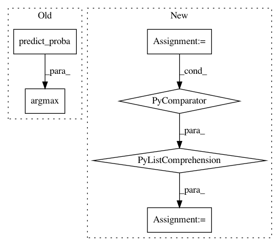

1e619d91956c813d2328a5460da0a273fe135905,hook/zmes_hook_helpers/face.py,Face,detect,#Face#Any#,123
Before Change
matched_face_rects = []
for idx,face_encoding in enumerate(face_encodings):
preds = self.svm_model.predict_proba([face_encoding])[0]
print (preds, self.svm_model.classes_)
best_pred_ndx = np.argmax(preds)
best_pred = preds[best_pred_ndx]
loc = face_locations[idx]
if best_pred >= g.config["face_recog_min_confidence"]:
After Change
face_encodings = face_recognition.face_encodings(rgb_image, known_face_locations=face_locations, num_jitters=self.num_jitters)
// Use the KNN model to find the best matches for the test face
closest_distances = self.knn.kneighbors(face_encodings, n_neighbors=1)
are_matches = [closest_distances[0][i][0] <= g.config["face_recog_dist_threshold"] for i in range(len(face_locations))]
matched_face_names = []
matched_face_rects = []
In pattern: SUPERPATTERN
Frequency: 3
Non-data size: 6
Instances
Project Name: pliablepixels/zmeventnotification
Commit Name: 1e619d91956c813d2328a5460da0a273fe135905
Time: 2019-11-15
Author: pliablepixels@gmail.com
File Name: hook/zmes_hook_helpers/face.py
Class Name: Face
Method Name: detect
Project Name: scikit-multiflow/scikit-multiflow
Commit Name: 7e0e9b744c1c307d3e42f8feae764ee090fad1ce
Time: 2019-04-08
Author: andrecruz97@gmail.com
File Name: src/skmultiflow/meta/dynamic_weighted_majority.py
Class Name: DynamicWeightedMajority
Method Name: predict
Project Name: scikit-multiflow/scikit-multiflow
Commit Name: 25723006dbd088a24215b23242e55d06e12afd8e
Time: 2019-04-14
Author: andrecruz97@gmail.com
File Name: src/skmultiflow/meta/additive_expert_ensemble.py
Class Name: AdditiveExpertEnsemble
Method Name: predict